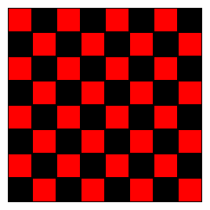

Doodle
Doodle is a Scala library for 2D graphics, animation, data visualization, and creative coding. It runs in both the JVM, rendering via Java2D, and the web browser using SVG.
Getting Started
To use Doodle, add the following to your build.sbt
libraryDependencies += "org.creativescala" %% "doodle" % "0.18.0"ScalaDoc
See the ScalaDoc index for API documentation.
Quick Example
The following example creates a Chessboard, by first creating a 2x2 board, then a 4x4 board from the 2x2 board, and finally the complete 8x8 board from the 4x4 board.
// The "Image" DSL is the easiest way to create images
import doodle.image._
// Colors and other useful stuff
import doodle.core._
val blackSquare = Image.rectangle(30, 30).fillColor(Color.black)
val redSquare = Image.rectangle(30, 30).fillColor(Color.red)
// A chessboard, broken into steps showing the recursive construction
val twoByTwo =
(redSquare.beside(blackSquare))
.above(blackSquare.beside(redSquare))
val fourByFour =
(twoByTwo.beside(twoByTwo))
.above(twoByTwo.beside(twoByTwo))
val chessboard =
(fourByFour.beside(fourByFour))
.above(fourByFour.beside(fourByFour))To draw these Images call the draw method like so
// Extension methods
import doodle.image.syntax.all._
// Render to a window using Java2D (must be running in the JVM)
import doodle.java2d._
// Need the Cats Effect runtime to run everything
import cats.effect.unsafe.implicits.global
chessboard.draw()This creates the picture shown below.

Attention IntelliJ Users
The Scala Plugin of IntelliJ still has an open bug which cannot resolve implicits correctly. The above example might give you an Error warning in Line XX. You can ignore this warning, or fix it using chessboard.draw[Algebra, Frame, Canvas](). Please use any text editor and Metals to get a better experience using Doodle.
Learning Doodle
- To get started drawing pictures, read the Creating Pictures chapter.
- To understand the concept behind Doodle, start with the Core Concepts chapter.